Captura
A câmera registra a cena diante do usuário.
Tecnologia assistiva feita no Ceará
O Ver+ usa visão computacional para reconhecer pessoas, expressões, objetos e distâncias — e transforma tudo em descrições por áudio, em tempo real.

3 modos de operação
IA multimodal
100% focado em autonomia
LGPD imagens não armazenadas
Simples por fora, inteligente por dentro
Uma experiência pensada para reduzir etapas e entregar a informação certa no momento certo.
A câmera registra a cena diante do usuário.
A inteligência artificial entende pessoas, objetos e contexto.
O resultado é convertido em fala e reproduzido no fone.
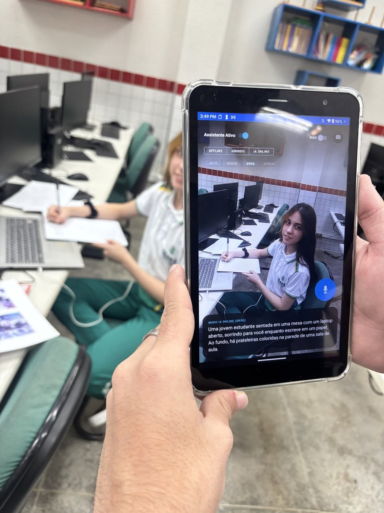
Feito para a vida real
Do aplicativo ao vestível
O conceito físico do Ver+ é um dispositivo retroauricular discreto, conectado ao smartphone e pensado para deixar as mãos livres.
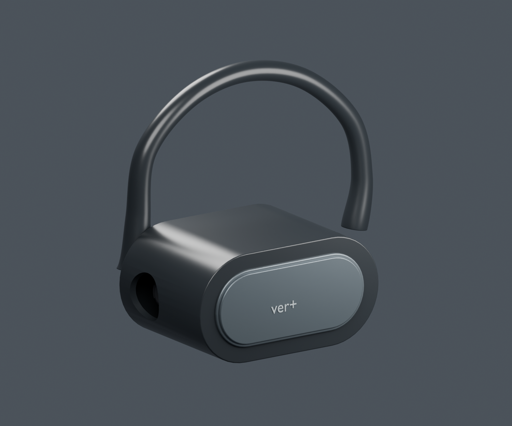
“
Incluir também é transformar informação visual em experiência acessível.
Por que o Ver+ existe
Muitas informações sociais e cotidianas ainda existem apenas no campo visual. O Ver+ aproxima a tecnologia assistiva das pessoas de forma discreta e humana.
Experimente o Ver+
Baixe gratuitamente a versão mais recente. O botão é atualizado automaticamente quando uma nova versão é publicada.
Pessoas que enxergam possibilidades
Estudantes e educadores da EEEP Professora Maria Célia Pinheiro Falcão unidos por tecnologia e impacto social.
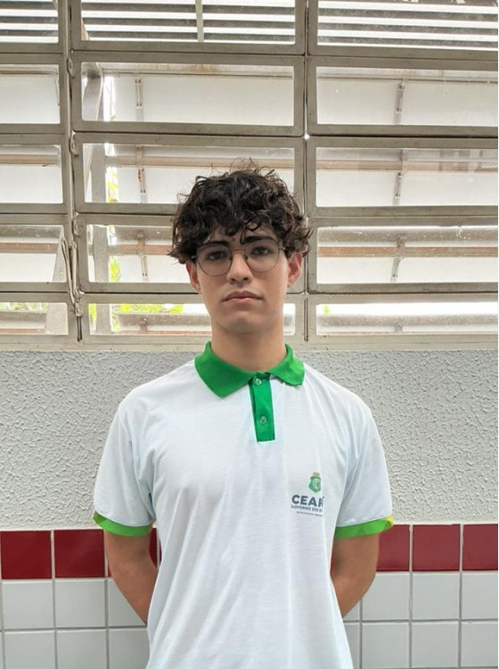
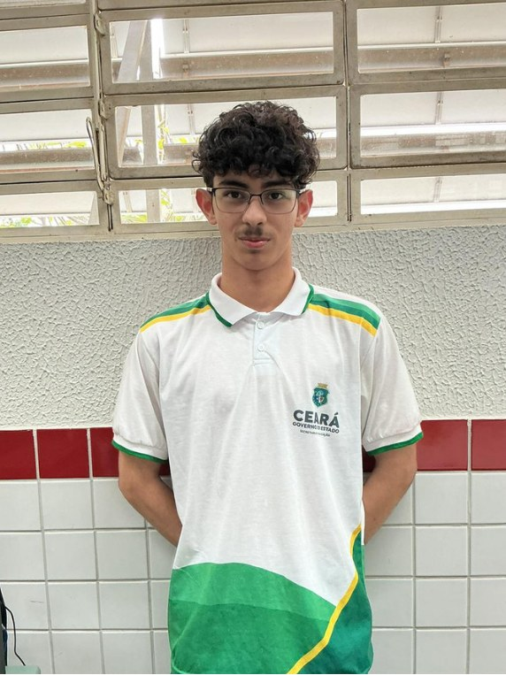
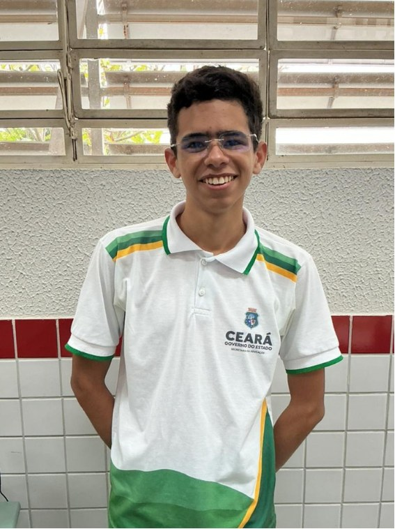
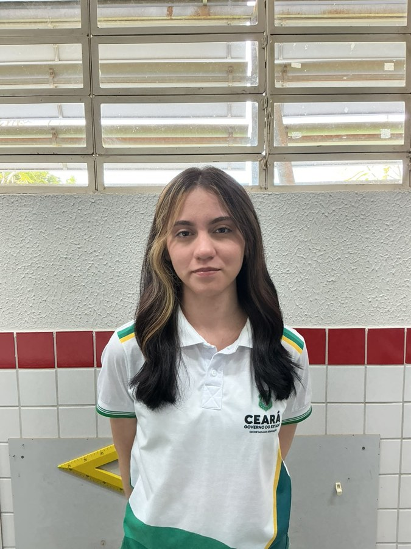
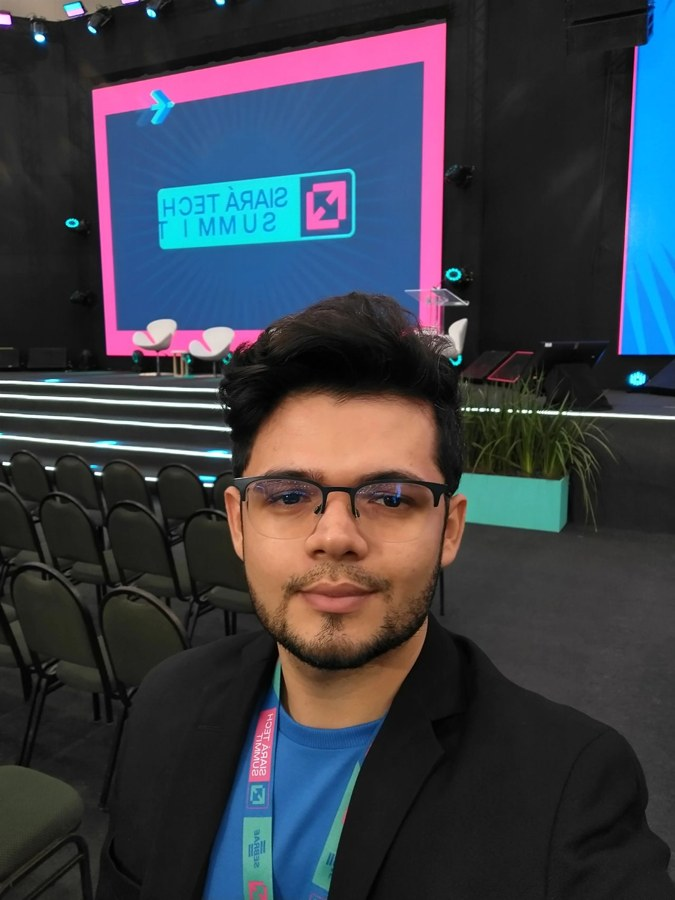
Empreendedorismo
Formação ampliada do Ver+ nas disciplinas de Gestão de Startup I, II e III.
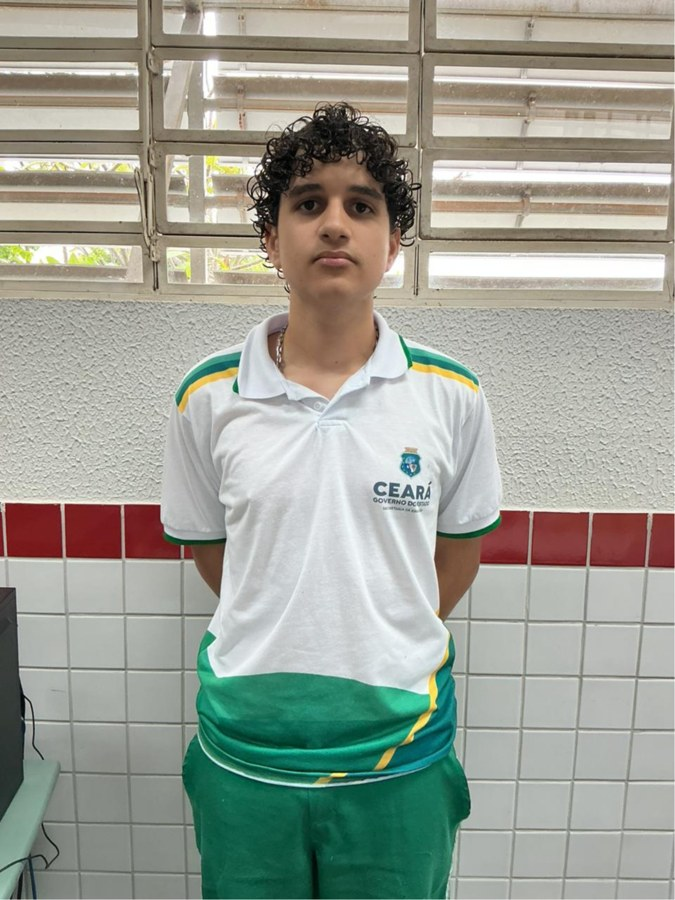
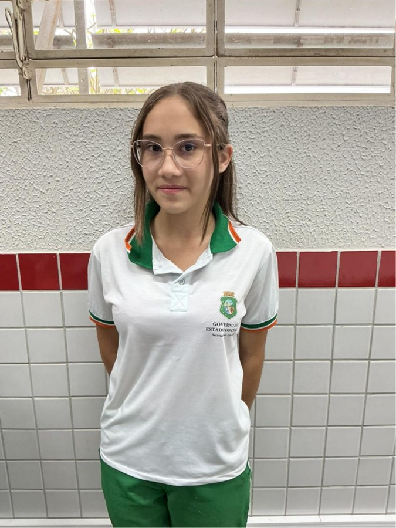
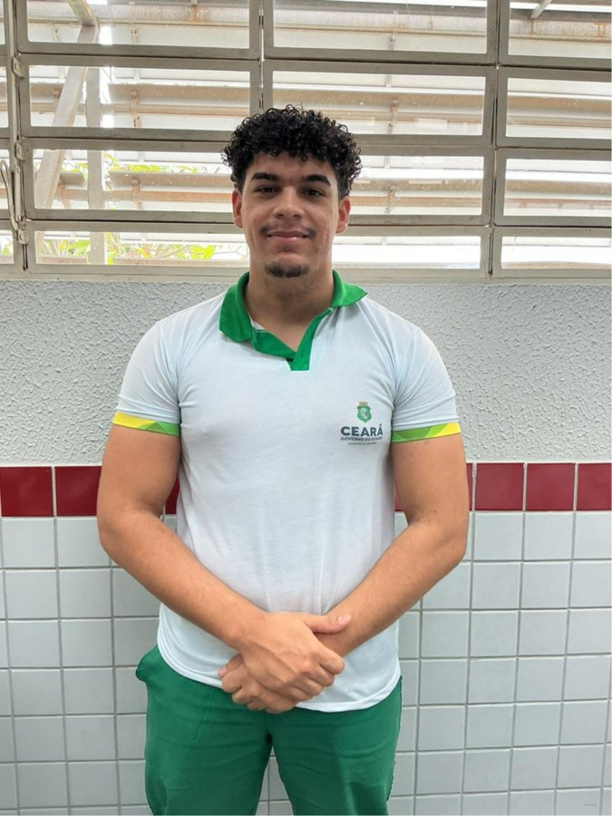
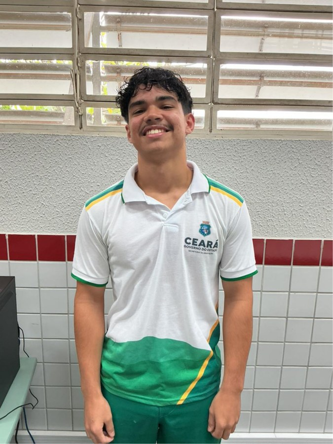
Caderno de campo
Navegue pelos registros reais do desenvolvimento do Ver+, das reuniões aos testes e à documentação.
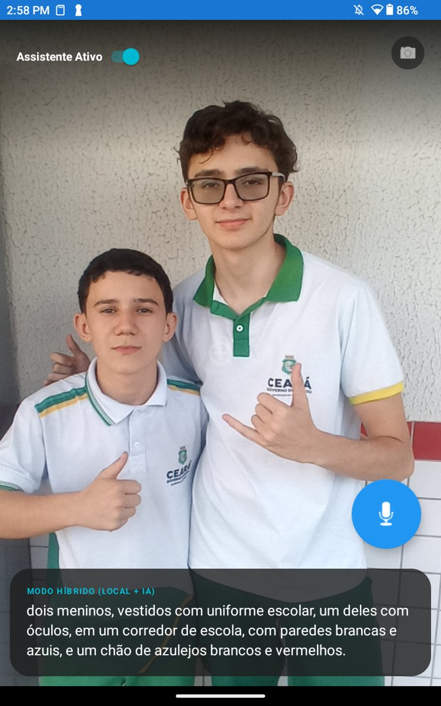
Use os botões anterior e próximo, as miniaturas ou as setas do teclado para mudar de registro.
Acompanhe o Ver+
Bastidores, testes, novidades e cada novo passo da nossa tecnologia assistiva.